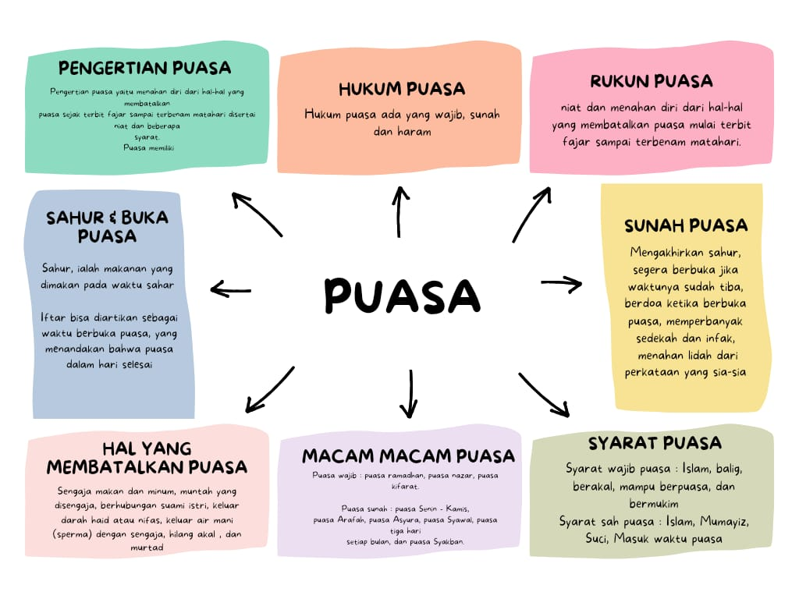
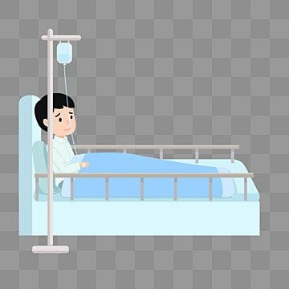

Pengertian puasa yaitu menahan diri dari hal-hal yang membatalkan puasa sejak terbit fajar sampai terbenam matahari disertai niat dan beberapa syarat Puasa memiliki kedudukan yang sangat penting dalam Islam sehingga diwajibkan pada umat Islam dan umat umat terdahulu. Allah Swt. berfirman dalam surah al-Baqarah/2: 183:
يَأَيُّهَا الَّذِينَ آمَنُوا كُتِبَ عَلَيْكُمُ الصِّيَامُ كَمَا كُتِبَ عَلَى الَّذِينَ مِنْ قَبْلِكُمْ لَعَلَّكُمْ تَتَّقُونَ (۱۸۳)
"Wahai orang-orang yang berman, diwajibkan atas kamu berpuma diwajibkan atas orang sebelum kamu agar kamu bertakwa". Ayat tersebut memerintahkan orang beriman untuk berpuasa agar menjadi manusia yang bertakwa.
Hukum Puasa
Hukum Ash-Shiyaam (Puasa) Wajib 'Ain, artinya setiap orang Islam yang telah baligh (dewasa) dan sehat akalnya serta tidak ada sebab-sebab yang dibenarkan agama untuk tidak berpuasa, maka mereka itu wajib melakukannya, dan berdosa bagi yang meninggalkannya dengan sengaja.
Firman Allah : Hai orang-orang yang beriman, diwajibkan atas kamu berpuasa sebagaimana diwajibkan atas orang-orang sebelum kamu agar kamu bertaqwa. [QS. Al-Baqarah : 183] Menahan diri dari makan, minum, jima' dan lain-lain yang telah diperintahkan syara’ kepada kita menahan diri padanya sepanjang hari menurut cara yang disyariatkan.
Disertai pula menahan diri dari perkataan sia-sia, perkataan keji/kotor dan lainnya dari perkataan yang diharamkan dan dimakruhkan pada waktu yang telah ditentukan serta menurut syarat-syarat yang telah ditetapkan. [Subulus Salaam juz 2, hal. 150]
Rukun puasa
1) Niat untuk puasa. Niat harus dilakukan pada setiap hari. Adapun untuk puasa wajib, niatnya harus dilakukan pada malam hari, sedangkan untuk puasa sunah, niatnya boleh dilakukan pada siang hari sebelum tergelincirnya matahari dengan syarat belum melakukan sesuatu yang dilarang bagi orang yang berpuasa.
2) Menahan diri dari segala sesuatu yang membatalkan puasa sejak terbitnya fajar sampai terbenamnya matahari.
SUNAH-SUNAH PUASA
1) Menyegerakan berbuka puasa jika telah gelas masuk waktu Magrib.
2) Mengakhiri makan sahur (kira-kira beberapa menit sebelum imsak)
3) Tidak mengucapkan kata-kata yang buruk, melakukan gibah, mencela, dll.
4) Mandi wajib bagi orang yang junub sebelum terbit matahari.
5) Membaca doa ketika berbuka puasa, yaitu sebagai berikut. Artinya: "Ya Allah, untuk-Mu aku berpuasa, kepada-Mu aku beriman, dan dengan rezeki yang Engkau berikan aku berbuka. Dengan rahmat-Mu, wahai Yang Maha Pengasih lagi Maha Penyayang."
6) Memperbanyak membaca Al-Qur'an dan mempelajarinya serta berdzikir.
7) Hendaklah memperbanyak sedekah.
8) Buka puasa diawall dengan setting, sesuatu yang manis, atau dengan air.
9) Memberikan makanan untuk berbuka kepada orang yang berpuasa.
10) Itikaf pada sepuluh hari terakhir di bulan.
Syarat wajib puasa
Ketentuan-ketentuan orang yang wajib menjalankan puasa
a. Islam
b. 'Aqil baligh (dewasa), bukan anak-anak.
c. Berakal sehat
d. Muqim (berada di daerah tempat tinggalnya/daerah iqomahnya), bukan sebagai musafir.
syarat sah puasa
Ketentuan-ketentuan orang yang sah menjalankan puasa
a. Islam
b. mumayiz .
c. suci dari haid dan nifas bagi wanita dan pada waktu-waktu di perbolehkan puasa
Macam-macam puasa
1) Puasa wajib, yaitu puasa bulan Ramadan, puasa kafarat, dan puasa nazar.
2) Puasa sunah, seperti puasa Senin-Kamis, puasa Arafah, puasa Asyura, dll.
3) Puasa makruh, seperti puasa pada hari syak, dll.
4) Puasa haram, yaitu puasa pada hari Raya Idul Fitri dan Idul Adha, dan puasa di hari tasyrik, yaitu tanggal 11. 12, dan 13 Dzulhijjah.
YANG MEMBATALKAN PUASA
1) Makan dan minum atau memasukkan segala sesuatu ke dalam rongga badan (mulut, hidung, telinga, dubur.kubul, luka) dengan sengaja.
2) Menggunakan obat melalui dubur dan kubul.
3) Muntah dengan sengaja.
4) Bersetubuh.
5) Keluar mani dengan sengaja. Bermimpi di siang hari tidak membatalkan puasa.
6) Keluar darah haid atau nifas bagi perempuan.
7) Melahirkan walaupun tidak ada cairan yang keluar
8) Menjadi gila meskipun sebentar.
9) Pingsan seharian.
10) Murtad, yakni keluar dari Islam.
Orang yang membatalkan puasa karena bersetubuh pada bul Ramadhan wajib menggadha dan memba- yar kafarat. Kafaratnya adalah memerdekakan seorang hamba saha yang beragama Islam. Jika tidak mampu, dia harus berpuasa salut pencari doa berturut-turut. Jika tidak mampu juga, dia harus memberi makan kepada orang miskin miskin sebanyak 60 orang, set orang akan menda- pat satu lumpur (3/4 liter beras). Sementara itu, orang yang membatalkan puasa selain bersetubuh wajib menggadha puasanya saja.
HAL-HAL YANG MEMPERBOLEHKAN TIDAK BERPUASA RAMADAN
Orang yang diperbolehkan untuk tidak berpuasa di bulan Ramadan terbagi menjadi dua golongan, yaitu
1) Orang yang boleh meninggalkan puasa, tetapi wajib menggadhanya:
a) Orang yang sakit bila dengan berpuasa dapat membahayakan dirinya.
b) Orang yang sedang melakukan perjalanan jauh (tamu).
c) Wanita hamil yang bertanya-tanya akan membahayakan dirinya dan kandungannya jika berpuasa. Namun, jika kahawatir atas anak yang dikandungnya, dia harus menggada puasanya dan membayar fidyah untuk setap harinya.
d) Ibu yang menyusui yang memikirkannya akan membahayakan diri dan anaknya jika berpuasa. Namun, jika khawatir atas anak yang disusuinya, dia harus menggada puasanya dan membayar fidyah untuk setap harinya